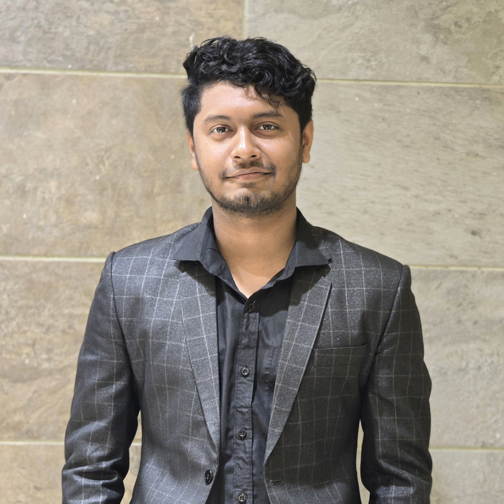

Industrial Attachment

Robi
Gained practical exposure to telecommunications operations, engineering workflows, and professional technical environments.
WELCOME TO MY PORTFOLIO
I am passionate about biomedical signal processing, artificial intelligence, machine learning, and intelligent engineering systems.

About me
I am an Electrical and Electronic Engineering graduate from Chittagong University of Engineering & Technology (CUET), Bangladesh, with a strong academic foundation and a growing passion for research and technological innovation. My primary research interests lie in biomedical signal processing, artificial intelligence, machine learning, and explainable AI, particularly their applications in healthcare and intelligent systems. My undergraduate thesis focused on ECG–PPG signal integration for cardiovascular risk assessment and non-invasive blood pressure estimation using adaptive Kalman filtering and AI-driven approaches. Beyond my academic coursework, I have contributed to four research papers presented at international conferences, gaining experience in research methodology, computational modeling, data analysis, and scientific communication. I also completed an industrial attachment at Robi, gaining practical exposure to telecommunications and professional engineering environments. Alongside my technical pursuits, my involvement in IEEE CUET Student Branch and other leadership initiatives has strengthened my teamwork, organizational, and communication skills. I aspire to further develop my expertise through advanced research, interdisciplinary collaboration, and meaningful technological contributions.
Academic Research
I have four research papers presented at different international conferences in 2026. I have presented two research papers at academic conferences.
1. Quantitative Explainability of a Multichannel ECG–PPG CNN for Tachycardia Detection.
2. Venue-Aware Elo–Poisson Machine Learning and Monte Carlo Forecasting of the 2026 FIFA World Cup.
3. Morphology-Preserving Adaptive Kalman Filtering for ECG–PPG Signal Preprocessing in Cardiovascular Monitoring.
4. A Leakage-Resistant 103-Subject Benchmark of Compact EEG Decoding Pipelines for Zero-Calibration Motor Imagery.
Toolbox
CAREER & INDUSTRY EXPOSURE
My professional experience spans telecommunications, administrative operations, and organizational coordination, complementing my academic background in electrical engineering.
Gained practical exposure to telecommunications operations, engineering workflows, and professional technical environments.

Developed skills in professional communication, documentation, coordination, and organizational management through administrative responsibilities.
LEADERSHIP & DIGITAL MEDIA

Founder & Administrator | 2020–Present
As the founder and administrator of Save Bangladesh Football, I have been involved in developing and managing a digital platform dedicated to promoting Bangladeshi football since 2020. Through this initiative, I have gained practical experience in digital media management, content creation, audience engagement, and community development.
My responsibilities include developing content strategies, coordinating team activities, communicating with audiences, and overseeing digital platform operations. This experience has strengthened my leadership, organizational, communication, and creative problem-solving skills.
GET IN TOUCH
I welcome opportunities for academic collaboration, research discussions, and professional connections. Feel free to reach out through any of the platforms below.